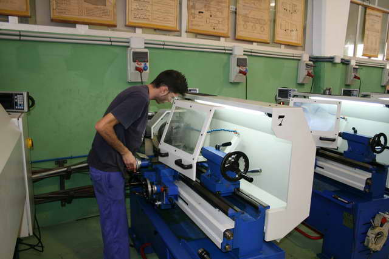
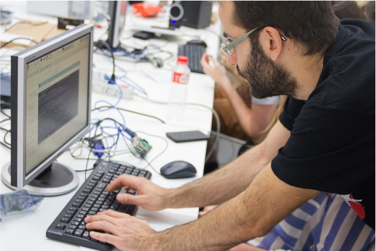

Fabricación mecánica

Las competencias profesionales de los Títulos de Fabricación Mecánica se refieren al diseño y definición de los productos mecánicos, al análisis e interpretación de anteproyectos para obtener la información técnica precisa para elaborar planos
de fabricación de construcciones metálicas, a la planificación, programación, control y ejecución de la producción, así como a la gestión de la calidad tanto de los productos, como de los procesos.
Informática y comunicaciones

Las competencias profesionales de los Títulos de Informática y comunicaciones se refieren a la informática y comunicaciones: implantación, mantenimiento y soporte de aplicaciones y sistemas informáticos, desarrollo y diseño de aplicaciones
informáticas de gestión.
Madrea, mueble y corcho

Las competencias profesionales de los Títulos de Madera, Mueble y Corcho se refieren al desarrollo y aplicación de las funciones de: diseño, definición y desarrollo de producto; organización, planificación, ejecución y control de la producción;
gestión de calidad; mantenimiento operativo; ventas y marketing; gestión de recursos humanos; y gestión y control de la seguridad.